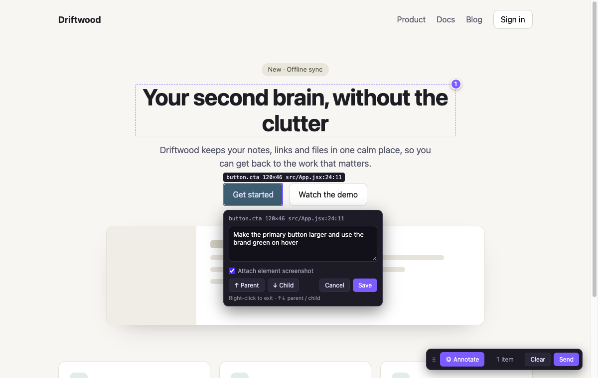
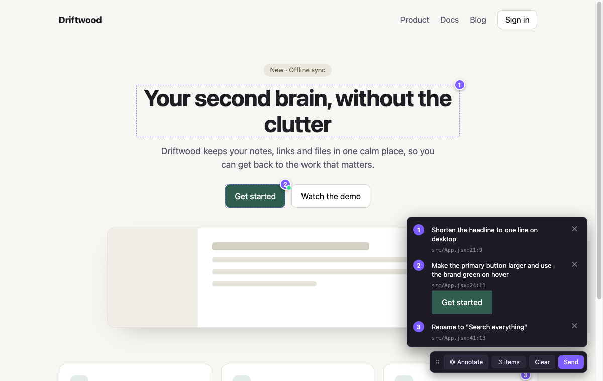
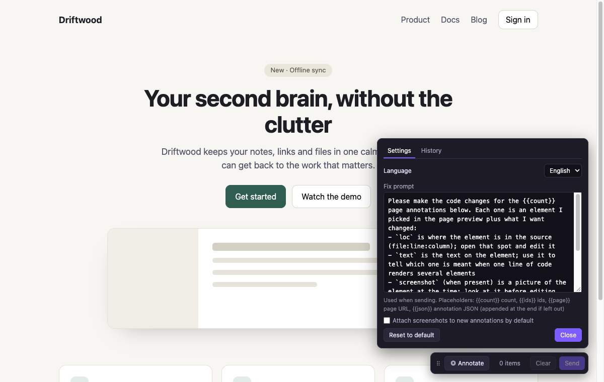
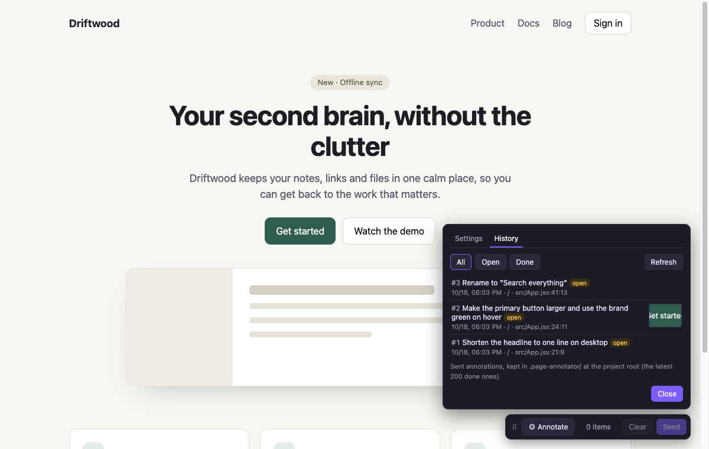

Exact JSX Source Locations
Tags JSX/TSX elements with file:line:column via Vite's native AST parser so your agent opens the exact line immediately.
Click any element on your live Vite dev page and write what should change. Each annotation captures its exact JSX source location (file:line:column) and an optional screenshot, streaming straight to Claude Code or OpenAI Codex.
vite.config, and configures MCP automatically.npm i -D vite-plugin-page-annotator
Paste this prompt into Claude Code, OpenAI Codex, or Cursor. Your agent will install the plugin, update vite.config, ignore .page-annotator/, and configure MCP for you.
Three ways to connect your browser preview to your coding agent—all backed by the same local .page-annotator/ queue.
The page-annotator-inbox plugin watches .page-annotator/outbox.json. Clicking Send in the browser places the fix prompt directly into your active Claude Code input box—just press Enter.
claude plugin install page-annotator-inbox --marketplace shinelikeamillion/vite-plugin-page-annotatorOr inside a Claude Code session run /plugin install page-annotator-inbox --marketplace shinelikeamillion/vite-plugin-page-annotator, or test once without installing: claude --plugin-dir node_modules/vite-plugin-page-annotator/claude-plugin
Configure page-annotator-mcp once, then tell your agent: "handle the page annotations".
Claude Code · .mcp.json
{
"mcpServers": {
"page-annotator": { "command": "npx", "args": ["page-annotator-mcp"] }
}
}OpenAI Codex · ~/.codex/config.toml
[mcp_servers.page-annotator]
command = "npx"
args = ["page-annotator-mcp", "--root", "/absolute/path/to/your/project"]| Tool | Description |
|---|---|
get_page_annotations | Reads pending annotations (JSON + screenshots) and marks them delivered |
mark_annotations_done | Marks resolved annotation IDs as done |
clear_page_annotations | Empties the queue when explicitly requested |
Clicking Send copies both the structured prompt (with file:line:column JSON) and the element screenshot. In a terminal, ⌘V pastes text and CtrlV pastes the image.
Replace vague descriptions with exact source coordinates and visual context.
Tags JSX/TSX elements with file:line:column via Vite's native AST parser so your agent opens the exact line immediately.
Captures a cropped snapshot of the element as it looks now, saved to .page-annotator/shots/ and passed to the agent.
Queue multiple UI notes across the page, review or edit drafts, and send everything in a single structured prompt.
Items move from pending → delivered → done. Inspect the latest 200 completed annotations with thumbnails in-page.
Customize the fix prompt using {{count}}, {{ids}}, {{page}}, and {{json}} placeholders. English and Chinese built in.
Runs only during vite dev inside an isolated Shadow DOM. Production builds contain zero bytes from this plugin.
Shows up on first visit, hides with ⌘⇧2, and never leaks styles into your application.

Hover to inspect file:line:column, click to add a note, or press ↑ / ↓ to traverse parent and child elements.

Review, edit, or remove queued annotations before sending the batch to Claude Code or Codex.

Right-click ⠿ to switch between English and Chinese, toggle default screenshots, or edit the prompt template.

Track pending, delivered, and done items along with element screenshot thumbnails.
Requires Vite 8+ and Node.js 20.19+. Works with any JSX framework for source locations, or CSS selectors on any page.
npm i -D vite-plugin-page-annotatorPlace pageAnnotator() before your framework plugin in vite.config.ts, and add .page-annotator/ to .gitignore.
import { defineConfig } from 'vite';
import react from '@vitejs/plugin-react';
import { pageAnnotator } from 'vite-plugin-page-annotator';
export default defineConfig({
plugins: [pageAnnotator(), react()], // pageAnnotator({ lang: 'zh' }) for Chinese
});Run npm run dev, open your page, and press ⌘⇧2 (CtrlShift2 on Windows/Linux).
⌘+click anywhere (or AltA) to start, then click an element. Write what should change and press Enter. Use ↑ ↓ to select parent or child elements.
Click Send. Notes are written to .page-annotator/, pushed to the Claude Code inbox / MCP queue, and copied to your clipboard.
On Windows and Linux, use Ctrl where you see ⌘.
| ⌘⇧2 | Show or hide the toolbar (remembered) |
| ⌘+click · AltA | Start annotating |
| Right-click · Esc | Stop annotating |
| ↑ ↓ | Pick parent or child element (⌥↑ ⌥↓ when text box has content) |
| Enter · ⇧Enter | Save note · new line |
| Drag ⠿ | Move toolbar; double-click ⠿ to reset |
| Right-click ⠿ | Settings: language, prompt template, screenshot default, history |
Three ways: (1) The page-annotator-inbox Claude Code plugin watches .page-annotator/outbox.json and automatically fills your Claude Code terminal prompt box whenever you click Send; (2) The built-in page-annotator-mcp stdio server lets Claude Code and Codex call get_page_annotations and mark_annotations_done; (3) One-click clipboard copy.
No. Both the JSX locator transform and the UI script use apply: 'serve'. A vite build output contains zero code or attributes from this plugin.
Any JSX/TSX framework (React, Preact, Solid, Qwik) gets automatic data-loc attributes via Vite's native parseAst. Non-JSX apps (Vue, Svelte, HTML) fall back to CSS selectors automatically.
No. The plugin adds **/.page-annotator/** to Vite's server.watch.ignored list so writing queue files and screenshots never reloads your page.